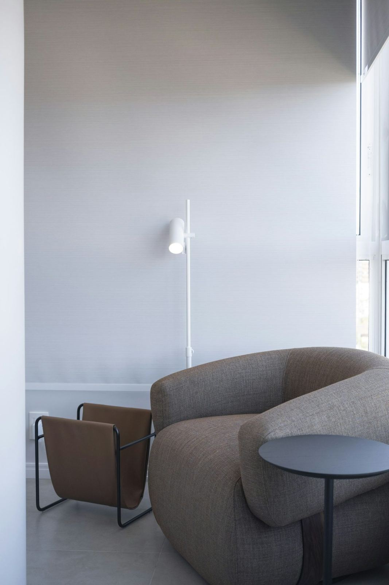

Uzman Psikolog, Aile Danışmanı
Çocuklar, çiftler ve aileler için güvenli bir alan
Bilişsel davranışçı terapi, EMDR ve çift terapisiyle Adnan İnanıcı Caddesi'nde.
Çalışma saatleriRandevu ile
Atatürk MahallesiŞehitkamil, Gaziantep
Çalışma alanları
Her görüşme gizlilik ve saygı çerçevesinde yürütülür.
Bir dakikalık nefes molası
Kutu nefesi: 4 saniye nefes alın, 4 saniye tutun, 4 saniye verin, 4 saniye bekleyin. Daireyi takip edin.
Bu egzersiz rahatlamaya yardımcı bir tekniktir, terapinin yerine geçmez.
Hazır olduğunuzdabaşlata dokunun
Terapi süreci
Kendi hızınızda ilerleyen, birlikte planlanan bir süreç.
Ön görüşme
Sizi bu sürece getiren konu ve beklentileriniz hakkında ilk görüşme yapılır.
Değerlendirme
Gerekli durumlarda görüşme ve testlerle ihtiyacınız netleştirilir.
Terapi süreci
Ortak belirlenen hedefler doğrultusunda düzenli seanslar planlanır.
Kapanış ve izlem
Kazanımlar birlikte değerlendirilir, gerekirse izlem görüşmeleri yapılır.
Size uygun bir saat bulalım
Formu doldurun ya da arayın, randevunuzu birlikte planlayalım.